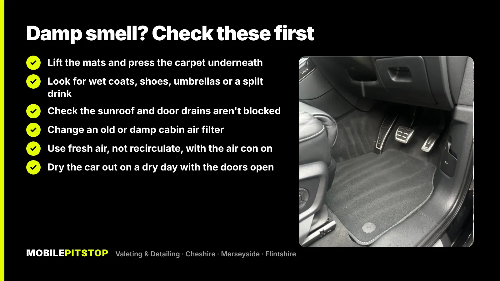
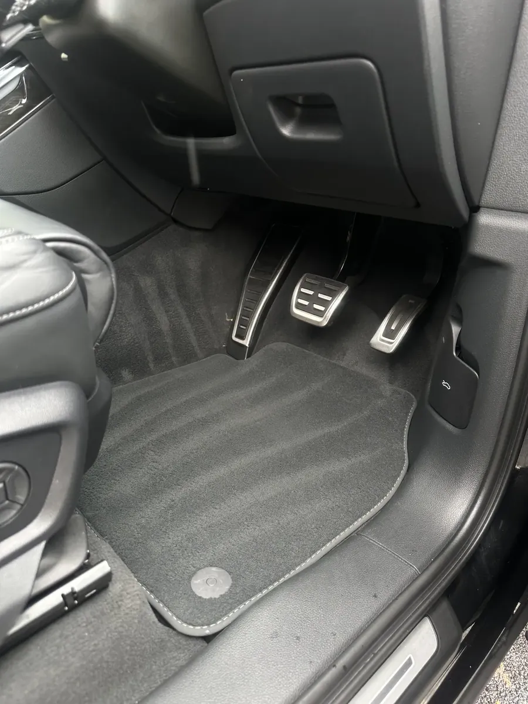
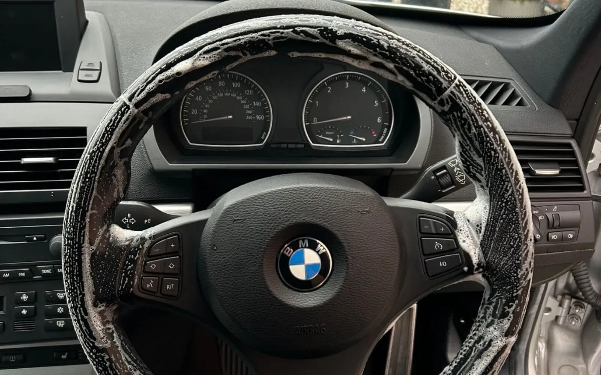

A damp or musty smell in a car almost always means water is sitting somewhere it shouldn't: in the carpet, under the mats, in the boot or inside the air conditioning. Where there's trapped moisture and no airflow, mould and mildew follow, and that's the smell you're picking up.
The fix comes in two parts. First, find where the water is coming from and stop it. Then dry out and properly clean whatever got wet. An air freshener does neither, which is why the smell keeps coming back every time the car warms up or it rains.
Below is what usually causes it, what you can check and do yourself, where DIY runs out, and how we deal with it on our jobs.
What causes a damp smell in a car
Autumn is when most people notice it. The car gets in and out of the rain all day, everyone climbs in with wet coats and shoes, and the windows mist up every morning. The common causes:
Wet carpets and mats. Water off shoes soaks through the mat into the carpet and the thick underlay beneath it. The top can feel dry while the underlay stays wet for weeks.
Wet things left in the car. Coats, umbrellas, gym kit, a dog towel in the boot, or a drink that tipped over under a seat.
Condensation. Moisture from wet clothes and breath settles on the cold glass and drips into the door bottoms and carpets. If your windows mist up badly every morning, there's a lot of water in the car.
Blocked drains. Sunroofs, door bottoms and the area under the windscreen all have drain holes. When leaves and dirt block them, rainwater finds another way out, often into the footwell.
A leak. A tired door or boot seal, or a seal around a light or the windscreen, can let water in slowly. A wet boot floor or spare wheel well is a common sign.
The air conditioning and cabin air filter. The air con takes moisture out of the air, which is normal. If the system or an old filter stays damp, it can start to smell musty, usually in the first minute after you switch the fan on.
How to find where the smell is coming from
Your nose is the best tool here. Notice when the smell is worst, because that points to the cause.
When it smells
Where to look first
Mostly when the fan or air con comes on
Cabin air filter and the air con system
All the time, worse after rain
Carpets and underlay, drains, door and boot seals
Strongest at the back or in the boot
Boot floor, spare wheel well, rear footwells
Worst on a warm day after a wet week
Damp fabric drying out: seats, carpets, mats
Then work through the car by hand. Take every mat out and press your palm firmly into the carpet underneath, especially in the footwells and along the edges near the doors. Lift the boot floor and check the spare wheel well. If you find a wet patch, the smell is coming from there, and you need to work out how the water got in.

How to get rid of a damp smell yourself
If the cause is simple, like wet mats or a damp coat left in the boot, this is often enough. Pick a dry day so you can leave the doors open.
Remove the source. Take out anything wet, and look under the seats for spilt drinks, food and forgotten kit.
Dry the mats indoors. Carpet mats left in the car stay wet for days. Bring them inside somewhere warm and let them dry fully before they go back in.
Dry the carpet. Press old towels or kitchen roll into any wet patch to soak up what you can, then leave the doors open in a dry spell. Running the heater with the air con on also helps, because the air con dries the air.
Vacuum thoroughly once everything is dry, including under the seats and in the boot.
Clear the drains you can reach, like the door bottoms and the area under the windscreen where leaves collect. Your handbook usually shows where the sunroof drains are.
Change the cabin air filter if it's old or you can't remember when it was last done. It's often behind the glovebox, and your handbook will say.
Two habits help through autumn and winter. Use the fresh air setting rather than recirculate when the windows are misting, so damp air is pushed out rather than kept in. And use the air con to clear the windows, even when it's cold, because it pulls moisture out of the air.
Moisture absorber bags or tubs from a car accessory shop can help keep things drier between drives, but they won't dry out a soaked carpet on their own.
What not to do: don't pour household bleach or mix cleaning products in the car, and don't hose or pressure-wash the interior. Soaking the carpet more than it already is makes the problem worse.
When DIY isn't enough
Home drying works on surface water. It struggles with:
Soaked underlay. The foam under the carpet holds water like a sponge, and a towel and a vacuum can't get it out.
Mould you can see, such as white or green spots on seats, seatbelts or carpets. It needs proper cleaning, not a wipe and a spray.
A smell that comes back on every warm or wet day, which means the source is still in the fabric.
A leak you can't find. One honest point here: we clean and treat the inside of the car, we don't repair seals or bodywork. If water is still getting in, the leak needs fixing at a garage or bodyshop, or the smell will return however well the car is cleaned.
How we get rid of damp and musty smells on our jobs
Our odour removal service works on the same idea for every smell: remove the cause first, then treat what's left. We choose the treatment to match the odour, and we do it at your home or workplace.

Footwells take most of the water in autumn, and the underlay beneath the carpet is where it hides.
Find the wet areas. Mats out, carpets and boot checked by hand, so we know what's damp and how far it's spread.
Source removal. Anything that's been holding water or spilt comes out, with a deep vacuum of the seats, carpets, edges and boot.
Steam, shampoo and extraction of the affected seats, carpets and mats. Extraction is the step that matters for damp: it pulls the dirty water back out of the fabric instead of leaving it behind.
The ventilation treated, not just the surfaces you can see, with advice on the cabin air filter so the smell doesn't come straight back through the fan.
Ozone or chlorine dioxide treatment where it's suitable, in the empty, closed car, to reach the smell in places no brush can get to. The car is aired out before you get back in.

Sanitising a steering wheel. Steam cleaning of contact areas is part of our Interior Deep Clean.
If the whole interior needs a reset, an In & Out Deep Clean includes steam, shampoo and extraction of the seats, carpets, mats and boot. For an interior that's grubby rather than damp, the Interior Deep Clean may be all you need.
Not sure which fits? Send us a few photos in daylight and tell us when the smell is worst. We'll tell you straight which service the car needs, including when a cheaper one will do.
Keeping it from coming back
Once the car is dry and clean, a few habits keep it that way through the wet months in Cheshire and on the Wirral:
Swap carpet mats for rubber ones over autumn and winter, and empty them when they collect water.
Don't leave wet coats, towels or umbrellas in the car overnight.
Clear leaves from around the windscreen and the sunroof now and then, especially if you park under trees.
Keep the cabin air filter changed at the intervals in your handbook.
Give the car a dry-out with the doors open whenever you get a dry, breezy day.